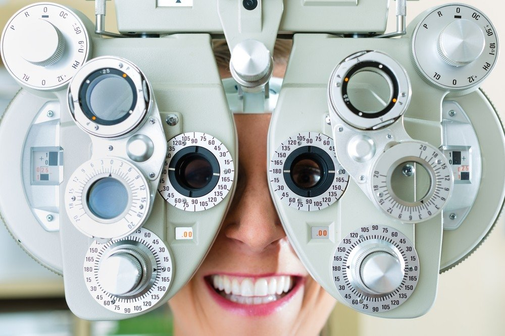

Akiniai - Bikko.lt
Siekdami užtikrinti Jūsų naršymo kokybę, statistiniais ir rinkodaros tikslais šioje svetainėje naudojami slapukai (angl. Cookies). Paspaudę mygtuką „Gerai“ arba naršydami toliau, patvirtinate savo sutikimą su slapukų įrašymu. Sutikimą bet kada galėsite atšaukti, pakeisdami interneto naršyklės nustatymus ir ištrindami įrašytus slapukus. Gerai Daugiau informacijos Pavasarį! Išparduodame dviračių modelius ženkliai pigiau! Rinktis
Mano paskyra Mano pažymėti Prisijungti Mano paskyra Mano pažymėti Prisijungti icon Greitas
pristatymas
icon Garantijaviskam
icon OutletIšparduotuvė
toggle content 0 KrepšelisJūsų krepšelis tuščias.
Viso: 0,00 € Susisiekite: 8 684 18384info@bikko.lt
Akcijos Pristatymas Naujienos Kontaktai Apie mus Prisijungti Prisijungti Norite susikurti paskyrą? Registruokitės! Pamiršote slaptažodį? Kategorijos Home DOVANŲ KUPONAI DVIRAČIAI OUTLET Dviračiai Dalys ir aksesuarai Kalnų (MTB) dviračiai 26 kalnų dviračiai 29er dviračiai 650B - 27,5 dviračiai FAT BIKE dviračiai Hibridiniai (Cross) dviračiai Miesto dviračiai Miesto Sulankstomi Turistiniai (ATB) dviračiai Vaikiški dviračiai Paspirtukai vaikams Balansiniai dviratukai Vaikiški dviračiai 1,5–4 metų, 12 colių Vaikiški dviračiai 2,5–5 metų, 14 colių Vaikiški dviračiai 3,5–6 metų, 16 colių Vaikiški dviračiai 4–6,5 metų, 18 colių Vaikiški dviračiai 5–8 metų, 20 colių Vaikiški dviračiai 6–12 metų, 24 colių Paaugliški dviračiai Sulankstomi dviračiai Plento dviračiai Race dviračiai Fitness dviračiai Cyclocross / Gravel dviračiai BMX dviračiai DIRT dviračiai Stilingi dviračiai Kruizeriai Klasikiniai dviračiai Elektriniai dviračiai Elektriniai paspirtukai Paspirtukai DVIRAČIŲ DALYS ir AKSESUARAI Žiemos prekės – slidinėjimo šalmai, slidinėjimo akiniai Slidinėjimo akiniai UVEX Slidinėjimo šalmai UVEX Žieminės padangos Spidometrai ir pulsometrai Shimano dviračių dalys Shimano diskiniai stabdžiai Shimano grandinės Shimano galinės įvorės / stebulės Shimano priekinės įvorės / stebulės Shimano miniklio velenai Shimano pavarų perjungimo rankenėlės Shimano galiniai pavarų perjungėjai Shimano priekiniai pavarų perjungėjai Shimano pedalai Shimano priekiniai dantračiai Shimano stabdžiai (V-brake ir kiti) Shimano stabdžių kaladėlės Shimano stabdžių rankenėlės Shimano vidinės pavaros Shimano galiniai žvaigždžių blokai / kasetės Shimano priekiniai žvaigždžių blokai Kitos Shimano dviračių dalys ir priedai Schwalbe padangos Dviračių skydeliai / purvasaugiai / sparnai Vaikiškos kėdutės Dviračių treniruokliai Dviračių laikikliai Dviračių laikikliai ant bagažinės Dviračių laikikliai ant kablio Dviračių laikikliai ant stogo Dviračių laikiklių priedai Aksesuarai dviračiui Apsaugos Gertuvės Gertuvės laikikliai Krepšeliai Krepšiai ir dėtuvės Pompos Skambučiai Skydeliai/Purvasaugiai Dviračių spidometrai ir pulsometrai Dviračių spynos Dviračių treniruokliai Vaikiškos dviračio kėdutės Vaikiškų dviračių priedai Apšvietimas Apšvietimo dalys Apšvietimo komplektai Atšvaitai Galinės lempos/žibintai Priekinės lempos/žibintai Balneliai ir komponentai Balneliai Balnelio stovo užspaudėjai Balnelio stovai/laikikliai Dviračių priedai Bagažinės ir priedai Pastatymo kojelės Pedalai Dviratininko apranga Akiniai Antbačiai Batai Kepurės ir pošalmiai Kojinės Kuprinės Marškinėliai Pašiltintojai Pirštinės Striukės Dviratininkų šalmai Šalmai vaikams Šortai ir kelnės Elektrinių dviračių dalys Maisto produktai sportui Batonėliai Energetiniai gėrimai Geliukai Kiti papildai Priežiūra ir remontas Įrankiai ir raktai Dviračių stovai ir laikikliai Tepalai ir priežiūra Ratai, padangos ir jų detalės Įvorės/Stebulės galinės Įvorės/Stebulės priekinės Įvorių/Stebulių dalys Dviračių kameros 8-18 kameros 20 kameros 24 kameros 26 kameros 27.5 kameros 27-28 kameros 29 kameros Kitos kameros Kamerų remontui Dviračių padangos 12-18 padangos 20 padangos 24 padangos 26 padangos 27.5 padangos 27 / 28 padangos 29 padangos Kitos padangos Galiniai dviračių ratai 12-20 galiniai ratai 24 galiniai ratai 26 galiniai ratai 27.5 galiniai ratai 28-29 galiniai ratai Kiti galiniai ratai Priekiniai dviračių ratai 12-20 priekiniai ratai 24 priekiniai ratai 26 priekiniai ratai 27.5 priekiniai ratai 28-29 priekiniai ratai Kiti priekiniai ratai Dviračių ratlankiai Sandarinimo skysčiai ir priedai Stipinai ir nipeliai Ventilių dalys Žieminės padangos Rėmai, šakės ir detalės Galiniai amortizatoriai Amortizatoriai/Šakės Rėmai Rėmo detalės Stabdžių sistema Dviračių diskiniai stabdžiai Stabdžiai (V-brake ir kt.) Dviračių stabdžių kaladėlės Diskinių stabdžių kaladėlės V-Brake/Caliper stabdžių kaladėlės Stabdžių priedai Stabdžių rankenėlės Šarvai ir trosai Kabelių rinkiniai Pavarų perjungimo trosai Stabdžių trosai Stabdžių (hidraulinių) žarnos Šarvų ir trosų priedai Trosų šarvai Vairo sistema Dviračių vairai Vairo galai Vairo kolonėlės Vairo iškyšos Vairo rankenėlės Važiuoklė/Pavarų sistema Dantračiai/žvaigždės Dviračių grandinės 1 pavaros grandinės 5-6 pavarų grandinės 7 pavarų grandinės 8 pavarų grandinės 9 pavarų grandinės 10 pavarų grandinės 11 pavarų grandinės 12 pavarų grandinės Grandinės sujungimai / dalys Miniklio velenai Pavarų perjungėjai galiniai Pavarų perjungėjai priekin. Pavarų perjung. rankenėlės Priekiniai žvaigždžių blokai, švaistikliai Transmisijos dalys Žvaigždžių blokai galiniai 1 pavaros galiniai blokai 5-6 pavarų galiniai blokai 7 pavarų galiniai blokai 8 pavarų galiniai blokai 9 pavarų galiniai blokai 10 pavarų galiniai blokai 11 pavarų galiniai blokai 12 pavarų galiniai blokai Galinių blokų dalys Kategorijos DOVANŲ KUPONAI DVIRAČIAI Kalnų (MTB) dviračiai 29er dviračiai 650B - 27,5" dviračiai 26" kalnų dviračiai FAT BIKE dviračiai Hibridiniai (Cross) dviračiai Miesto dviračiai Miesto Sulankstomi Turistiniai (ATB) dviračiai Vaikiški dviračiai Paspirtukai vaikams Balansiniai dviratukai Vaikiški dviračiai 1,5–4 metų, 12 colių Vaikiški dviračiai 2,5–5 metų, 14 colių Vaikiški dviračiai 3,5–6 metų, 16 colių Vaikiški dviračiai 4–6,5 metų, 18 colių Vaikiški dviračiai 5–8 metų, 20 colių Vaikiški dviračiai 6–12 metų, 24 colių Paaugliški dviračiai Sulankstomi dviračiai Plento dviračiai Race dviračiai Fitness Cyclocross / Gravel dviračiai BMX dviračiai Stilingi dviračiai Kruizeriai Klasikiniai Elektriniai dviračiai Elektriniai paspirtukai Paspirtukai DVIRAČIŲ DALYS ir AKSESUARAI Žiemos prekės Slidinėjimo akiniai Slidinėjimo šalmai Žieminės padangos Dviračių spidometrai ir pulsometrai Shimano dviračių dalys Shimano diskiniai stabdžiai Shimano grandinės Įvorės / stebulės galinės Įvorės / stebulės priekinės Shimano miniklio velenai Pavarų perjung. rankenėlės Pavarų perjungėjai galiniai Pavarų perjungėjai priekin. Shimano pedalai Shimano priekiniai dantračiai Shimano stabdžiai (V-brake ir kt.) Shimano stabdžių kaladėlės Shimano stabdžių rankenėlės Shimano vidinės pavaros Shimano žvaigždžių blokai galiniai Shimano žvaigždžių blokai priekiniai Shimano kitos dalys ir priedai Schwalbe padangos Dviračių skydeliai / purvasaugiai Vaikiškos kėdutės Treniruokliai dviračiui Dviračių laikikliai Dviračių laikikliai ant bagažinės Dviračių laikiklių priedai Dviračių laikikliai ant kablio Dviračių laikikliai ant stogo Aksesuarai dviračiui Apsaugos Gertuvės Gertuvės laikikliai Krepšeliai Krepšiai ir dėtuvės Pompos Skambučiai Skydeliai / purvasaugiai Spidometrai ir pulsometrai Dviračių spynos Treniruokliai dviračiui Vaikiškos kėdutės Vaikiškų dviračių priedai Apšvietimas Apšvietimo dalys Apšvietimo komplektai Atšvaitai Galinės lempos / žibintai Priekinės lempos / žibintai Balneliai ir komponentai Balneliai Balnelio stovo užspaudėjai Balnelio stovai / laikikliai Dviračių priedai Bagažinės ir priedai Pastatymo kojelės Pedalai Dviratininko apranga Akiniai Antbačiai Batai Kepurės ir pošalmiai Kojinės Kuprinės Marškinėliai Pašiltintojai Pirštinės Striukės Dviratininkų šalmai Šortai ir kelnės Elektrinių dviračių dalys Maisto produktai sportui Batonėliai Geliukai Energetiniai gėrimai Kiti papildai Priežiūra ir remontas Įrankiai ir raktai Dviračių stovai ir laikikliai Tepalai ir priežiūra Ratai, padangos ir jų detalės Įvorės / stebulės galinės Įvorės / stebulės priekinės Įvorių / stebulių dalys Kameros Kamerų remontui Dviračių padangos Ratai galiniai Ratai priekiniai Ratlankiai Stipinai ir nipeliai Ventilių dalys Žieminės padangos Rėmai, šakės ir detalės Galiniai amortizatoriai Amortizatoriai / šakės Rėmai Rėmo detalės Stabdžių sistema Diskiniai stabdžiai Stabdžiai (V-brake ir kt.) Stabdžių kaladėlės Stabdžių priedai Stabdžių rankenėlės Šarvai ir trosai Kabelių rinkiniai Pavarų perjungimo trosai Stabdžių trosai Stabdžių (hidraulinių) žarnos Šarvų ir trosų priedai Trosų šarvai Vairo sistema Vairai Vairo galai Vairo kolonėlės Vairo iškyšos Vairo rankenėlės Važiuoklė / pavarų sistema Dantračiai / žvaigždės Grandinės Miniklio velenai Pavarų perjungėjai galiniai Pavarų perjungėjai priekin. Pavarų perjung. rankenėlės Švaistikliai Transmisijos dalys Žvaigždžių blokai galiniai Ieškoti Bikko.lt Dviratininko apranga Akiniai Filtras Kaina Price From Price To € 4 € 130 Gamintojas MERIDA DET PROX UVEX ApžvalgosDviratis UNIBIKE Flash GTS 2014
Buvau išsirinkęs 2013m modelį tačiau, vadybiniDviratis Merida Crossway 20-V N2 2012
Sveiki mano manymu dviračiui trūksta bagažo irDviratis Merida CROSSWAY 20-D 2016 black
Mėgstu greitai važiuoti, man truputi per sunkus,NEMOKAMAS PRISTATYMAS
DVIRAČIAMS NUO 190 EUR!
PalygintiNieko nepasirinkote.
Akiniai
Bene pagrindinė dviratininko akinių paskirtis - apsaugoti akis nuo lietaus, vėjo, vabzdžių ir kitų veiksnių, galinčių sutrikdyti regėjimą ar net rimtai sužaloti akis. Tad jie nešiojami ne tik dėl mados, bet ir saugumo. Šis dviračio priedas labai rekomenduotinas ir būtinas ne ką mažiau nei šalmas. Tobulėjant technologijoms, akiniai tampa lengvesni, patvaresni. Šiuo metu standartiškai komplektuojami polikarbonato lęšiai, atsparūs UV spinduliuotei. Akiniai gali turėti specialius poliarizuotus arba net fotochromatinius lęšius, kurie tamsoje pašviesėja, o esant saulei - pritemsta. Galime pasiūlyti Merida, UVEX bei B-Skin kokybiškus akinius.
An error occurred, please try again later. Loading, please wait...Rūšiuoti: Pozicija Pavadinimas Kaina Rodyti 12 24 36 48 per puslapį 1 2 3 4 5 Kitas Dirželis Uvex eyewear strap Floatable
Prekė neturi įvertinimų
e-kaina 4,95 € 4.95 PREKĖS PRIEINAMUMAS: turime Į KREPŠELĮ Pažymėti Palyginti Akiniai Merida Promo Edition matt black/blackPrekė neturi įvertinimų
e-kaina 14,90 € 14.9 PREKĖS PRIEINAMUMAS: neturime Į KREPŠELĮ Pažymėti Palyginti Akiniai Uvex Sportstyle 223 black orangePrekė neturi įvertinimų
e-kaina 14,95 € 14.95 PREKĖS PRIEINAMUMAS: neturime Į KREPŠELĮ Pažymėti Palyginti Akiniai Uvex Sportstyle 204 clearPrekė neturi įvertinimų
e-kaina 14,95 € 14.95 PREKĖS PRIEINAMUMAS: neturime Į KREPŠELĮ Pažymėti Palyginti Akiniai Uvex Sportstyle 204 black greenPrekė neturi įvertinimų
e-kaina 14,95 € 14.95 PREKĖS PRIEINAMUMAS: turime Į KREPŠELĮ Pažymėti Palyginti Akiniai Uvex Sportstyle 223 blackPrekė neturi įvertinimų
e-kaina 14,95 € 14.95 PREKĖS PRIEINAMUMAS: neturime Į KREPŠELĮ Pažymėti Palyginti Akiniai Uvex Sportstyle 223 black greyPrekė neturi įvertinimų
e-kaina 14,95 € 14.95 PREKĖS PRIEINAMUMAS: neturime Į KREPŠELĮ Pažymėti Palyginti Akiniai Uvex Sportstyle 223 whitePrekė neturi įvertinimų
e-kaina 14,95 € 14.95 PREKĖS PRIEINAMUMAS: neturime Į KREPŠELĮ Pažymėti Palyginti Akiniai Uvex Sportstyle 204 smokePrekė neturi įvertinimų
e-kaina 14,95 € 14.95 PREKĖS PRIEINAMUMAS: neturime Į KREPŠELĮ Pažymėti Palyginti Akiniai Uvex Sportstyle 204 bluePrekė neturi įvertinimų
e-kaina 14,95 € 14.95 PREKĖS PRIEINAMUMAS: neturime Į KREPŠELĮ Pažymėti Palyginti Pigiau Akiniai Uvex Sportstyle 211 blk/ltm.silPrekė neturi įvertinimų
e-kaina 14,99 € 14.99 19,95 € * PREKĖS PRIEINAMUMAS: neturime Į KREPŠELĮ Pažymėti Palyginti Akiniai Uvex Sportstyle 507 blue orangePrekė neturi įvertinimų
e-kaina 15,95 € 15.95 PREKĖS PRIEINAMUMAS: turime Į KREPŠELĮ Pažymėti PalygintiRūšiuoti: Pozicija Pavadinimas Kaina Rodyti 12 24 36 48 per puslapį 1 2 3 4 5 Kitas Sekti mus BIKKO.lt kontaktai
Mūsų konsultantai teikia profesionalias konsultacijas nuo pirmadienio iki penktadienio nuo 10:00 iki 18:00 val.
+370 684 18384
info@bikko.lt
Apie Bikko.lt Kodėl BIKKO.lt? Apie mus Dviračių remontas Klientų atsiliepimai Taisyklės Įmonės duomenys Kontaktai Pirkimas Prekių prieinamumo statusai Apmokėjimas Pirkimas išsimokėtinai Pristatymas Grąžinimas Garantijos Akcijos Pagalba D.U.K. Kaip išsirinkti dviratį? Dviračių tipai Gamintojai / Prekiniai ženklai Apie naudotus dviračius Dviratis ir sveikata Informacija klientui Saugus važiavimas Moteriški dviračiai Vyriški dviračiai Privatumo politika Registruotis Prisijungti